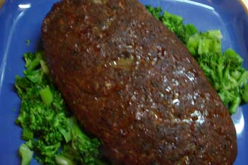

Favorite meat loaf
A man may order such things as gorgonzola foam, sushi, or paper thin slices of rare duck breast fanned out artfully on a bare plate when he goes out to a restaurant; but when he comes home from a long day at work what he wants to eat is roast chicken, or pot roast, or what I made tonight—meat loaf. At least that’s what my mother taught me and my experience seems to bear witness to it. And furthermore, she also taught me that if you have any bad news to impart, wait until you’ve satisfied your man with said meal until breaking it to him. I always rebelled against that part of the lesson and thought it wasn’t fair that I had to bear the burden of keeping bad news to myself, choosing to spill the beans as soon as possible, even if it meant interrupting my man while he was at work. My mother just celebrated her 54th wedding anniversary and I am on my third husband. I hate to use clichés in my writing, but you do the math!
A few comments about the following recipe—I use all beef in my meat loaf. I don’t like that ‘meat loaf mix’, with the veal and pork in it. I don’t eat veal, and I don’t like those veal-y, pork-y flavors in my meat loaf anyway, even though I do like pork. And get freshly ground beef from a good butcher or reputable grocer that grinds it frequently throughout the day, not too lean, so the loaf is juicy; about 85/15% lean to fat is right. Now, about those meat loaf pans you can buy with the removable inserts; don’t waste your money. They sort of steam the meat loaf and you don’t get a good crust and it’s revolting. You want a nice crust all over the top and sides. If the meat has the right amount of fat the run-off will be minimal. I bake my meat loaf on top of the broiler pan, in the oven. First I spray both the bottom part and the part the loaf will be sitting on with a non-stick spray. Then put them together and it’s the perfect meat loaf pan, and you get a lovely, tasty crust. My broiler pan is a dark, enameled steel; I don’t know how well stainless steel would work since stainless doesn’t conduct heat as well as dark metal.

- 3 lbs. ground beef
- 1 egg
- 1 cup soft bread crumbs
- 1 large onion, finely chopped
- 1/3 cup unsweetened applesauce (yes, applesauce!)
- 1/4 cup ketchup, or barbecue sauce for more flavor
- 1 or 2 shakes each soy and worcestershire sauce
- 1 tablespoon salt
- 1 teaspoon dried thyme
- liberal grinding black pepper (Poppy complains that I drag politics into everything!)
I used my food processor to grind up the end of a whole wheat baguette, then I quartered the onion and added it to the crumbs to finely chop. Next, beat the egg in a large bowl with a fork and add all the ingredients except the beef and blend well. You will have a thick, brown paste in the bowl that smells really good. You then want to cut and fold the beef in with the fork, but without condensing it too much. In other words, you want to leave it a little fluffy and not like a brick, but at the same time it has to hold together. Turn the whole thing onto the pan and shape it into an oblong loaf, trying to get it about the same width in the middle as at the ends so it will cook evenly. This will take about 1 1/2 hours to bake at 350ºF. Once it’s finished, let it rest about 10 minutes. You can put ketchup on the table because most people expect it but the meat should be so moist and tasty that it won’t need it.
This recipe feeds 4 to 6 people with enough left over for wonderful meat loaf sandwiches; try them with grainy mustard and horseradish.
Comments
God, Becky, I love you! You are a hoot. I just made a delicious meat loaf the other day, but will have to try this recipe.
You inspired me! I love meatloaf and always order it when I go out, but haven’t made one since college 30 years ago! I followed your recipe last night and had a delicious meatloaf and now have scrumptious leftovers! Thanks!!
Yay! This is all going according to plan.
Poppy and I had to drive to Erie yesterday to give a Retrouvaille talk and we enjoyed some delicious meat loaf sandwiches on bagels with mustard and horseradish in the car, since we had to turn around and drive right back home again, five hours of driving!
And Calvin fed meat loaf to his friends after school on Friday—you know your meat loaf is good when teenagers snack on it in preference to Doritos and Cheez-its!
Interesting recipe, I just use my hands to mix it up, it’s quick and you can make sure all the ingredients are blended properly.
Mixing by hand is certainly how they do it in restaurants; it is quicker but I’ve grown a little squeamish about getting raw meat under my fingernails in my old age. :)
Uncle Teddy, I just noticed in your comment that you eat meat loaf when you go out; that is one thing I would never order in a restaurant unless I knew where they got their meat. Most of them probably get it from those huge meat processing warehouses out west and it is full of god knows what. That is why I haven’t eaten a fast food burger in 20 years, not simple snobbishness, but fear of the unknown.
Ted and I both like the meatloaf from this gay restaurant called Cafeteria. Certainly it comes from god-knows-where, but it’s pretty good. I also have it at school all the time. I think you’re particularly squeamish about meat, but having worked in the food world I suppose you have good reason to be.
Add a comment